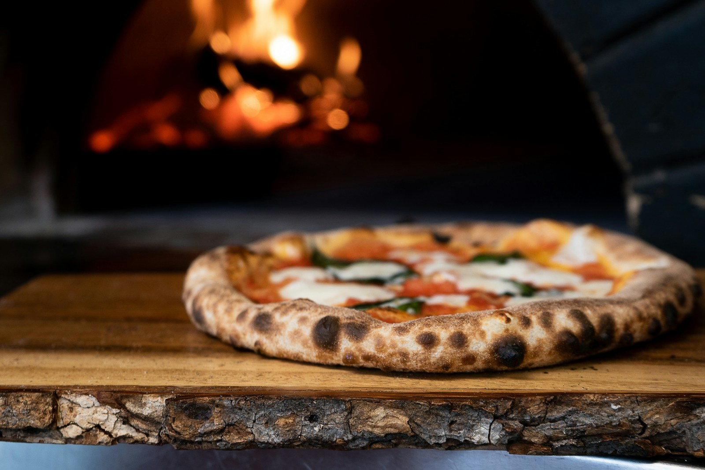
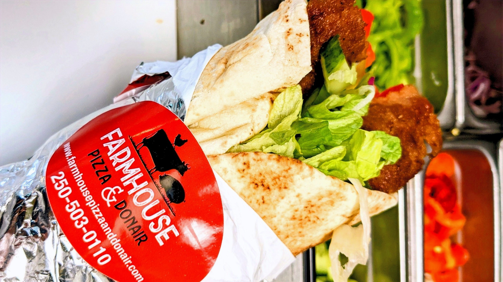

Pepperoni Lovers
Pizza sauce, mozzarella and two layers of pepperoni.
VERNON, BC / PIZZA & DONAIR
Scratch-made pizza. Sauce-dripping donairs. Your next favourite bite, right here in Vernon.


A Farmhouse donair, photographed by the restaurant.
Simple ingredients. Serious flavour.
It starts with six simple ingredients in our dough. Then come fresh-cut vegetables, generous toppings and real Canadian cheese. That’s our kind of pizza.
And when it’s a donair kind of day? Our in-house sauces bring it all together. Simple food, made with care.
Make it a Farmhouse nightYour neighbourhood pizza stop
Ordering for tonight? Place your order online or give us a call.
250.503.0110Huge pizza slices available from 11 am to 3 pm.